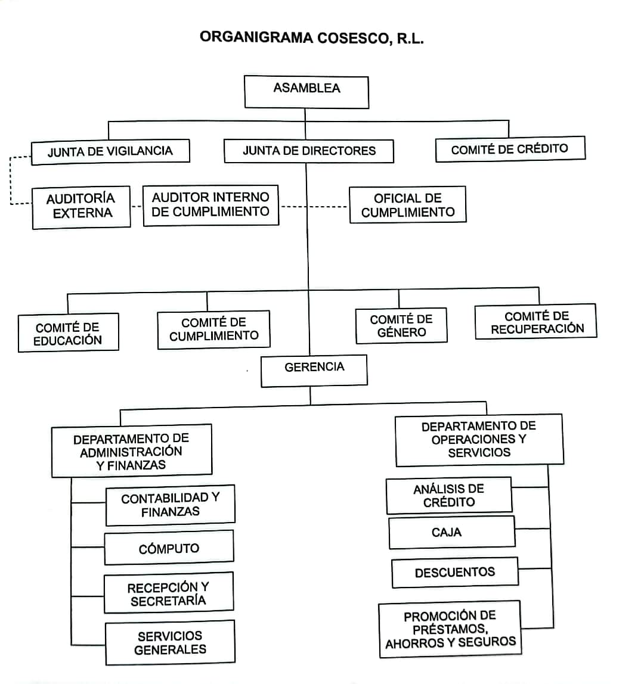

Misión
Mejorar la calidad de vida de los Asociados y trabajadores, mediante una gestión de excelente calidad, a través de aplicación del Modelo Operativo.
Visión
Empresa de excelencia, fundamentada en el Desarrollo óptimo de su estructura Socioeconomica para la solucion efectiva de las necesidades sentidas de los Asociados.
Valores
Las cooperativas se basan en los valores de ayuda mutua, responsabilidad, democracia, igualdad, equidad y solidaridad. Siguiendo la tradición de sus fundadores, sus miembros creen en los valores eticos de honestidad, transparencia, responsabilidad social y preocupación por los demas.
Reseña Historica
La Cooperativa de Ahorro y Crédito de Empleados del Sistema Integrado de Salud de Coclé R. L. fue constituida mediante escritura social el 17 de abril de 1982, en el tomo 327 del Registro de Cooperativas del IPACOOP.
Inició con 27 asociados fundadores del sector salud: Caja de Seguro Social y Ministerio de Salud. Su primer presidente fue el señor Leopoldo Álvarez.
El capital inicial fue de B/. 1,350.00.
Nuestras primeras actividades se realizaron en un espacio que nos ofrecieron en la Policlínica de Penonomé. Luego, conforme fuimos creciendo, nos mudamos a otros locales más grandes. En el año 2008 nos trasladamos al edificio Plaza del Sol.
En octubre de 1989 cambió su razón social a Cooperativa de Ahorro y Crédito de Empleados del Sistema Estatal de Salud de Coclé R. L., con las siglas COSESCO, R. L., con el propósito de abrir el vínculo a funcionarios de otras entidades estatales. A la fecha, contamos con 2,452 asociados inscritos.
Forma parte de nuestra empresa corporativa empleados públicos del Ministerio de Salud, Caja de Seguro Social, educadores, policías, empresa privada y otros ministerios.
Apoyamos a nuestros asociados para la compra de lentes, apoyo para hospitalización, ayuda para cubrir gastos funerarios de asociados y familiares, apoyo en caso de desastres naturales, seguro colectivo para casos de enfermedad de cáncer, entre otros.
Ofrecemos servicios de ahorros: corriente, navideño, a plazo fijo, escolar, ahorro para viajes y quince años, así como ahorros juveniles desde los 4 hasta los 17 años para hijos de asociados.
Contamos con diferentes tipos de préstamos que ayudan a nuestros asociados.
La Cooperativa actualmente cuenta con su propio edificio, al cual nos mudamos el día 17 de septiembre de 2017, ofreciendo mayor comodidad para nuestros asociados.
Actualmente, la Junta de Directores solicitó la modificación de estatutos e inscripción de cambio de tipo para denominarse en lo sucesivo Cooperativa de Servicios Múltiples de Empleados del Sistema Estatal de Salud de Coclé, R. L., con las siglas COSESCO, R. L., mediante Resolución DRC/CT N.° 01-2025, del 8 de agosto de 2025.
Organigrama
